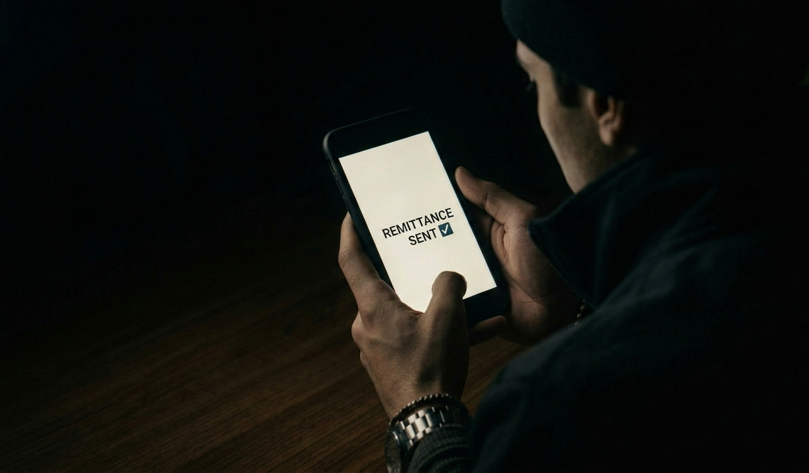

The Last Card

A Quiet Night After Work
The winter air in South Korea cuts sharply after a long factory shift ends. Venn steps into his small, silent room and meticulously removes his heavy winter jacket, the physical toll of manual labor settling into his shoulders. He does not rest immediately. A message from his family in the Philippines blinks on his smartphone screen, illuminating the dim space with a quiet reminder of home. He glances at it briefly, exhales softly, and opens his laptop.
It is well past midnight, but the day is far from over. He logs into his online university class, making a seamless but grueling transition from intense physical exertion to demanding academic focus. This dual burden is exhausting, yet entirely necessary for the future he is trying to build.
Being the “Last Card”
To his family back in the Philippines, Venn’s presence abroad represents far more than just economic contribution. His life fundamentally challenges traditional, rigid definitions of masculinity and strength. He is a factory hand, a university student, an athlete, and above all, a breadwinner. He describes himself as their “last card”—the final option they rely on to keep their future secure when all other avenues have been exhausted.

Working in a Male-Dominated Space
Most of Venn’s days are consumed by the repetitive rhythm of a factory floor—an environment often defined by socially conservative attitudes and strict, unspoken expectations of masculinity. As a gay Filipino man working in this space, he is acutely aware of the subtle pressures dictating how he should carry himself, how he should speak, and how much of his true identity he can safely reveal.

Life Beyond the Factory
Outside the constraints of the factory floor, Venn finds a profoundly different space for expression: the volleyball court. Here, as a competitive athlete, his strength is highly visible and undeniable. On the court, his presence makes it clear that masculinity does not need to be exclusively heterosexual to be recognized as valid and powerful.
Quiet Strength
Ultimately, when the grueling shift ends, Venn returns to the small room where his relentless routine began. He sits alone, opens his phone, and initiates a transfer of funds back to the Philippines. In this profound, quiet space, strength is not loud or triumphant. It is the steady, conscious decision to carry responsibility again tomorrow.

Interview Source & Ethical Consent
This feature story is based on an interview conducted verbatim with Venn in February 2026. Venn provided full, informed consent for the use of his actual name and story.
Full Interview Recording/Transcript: Click here